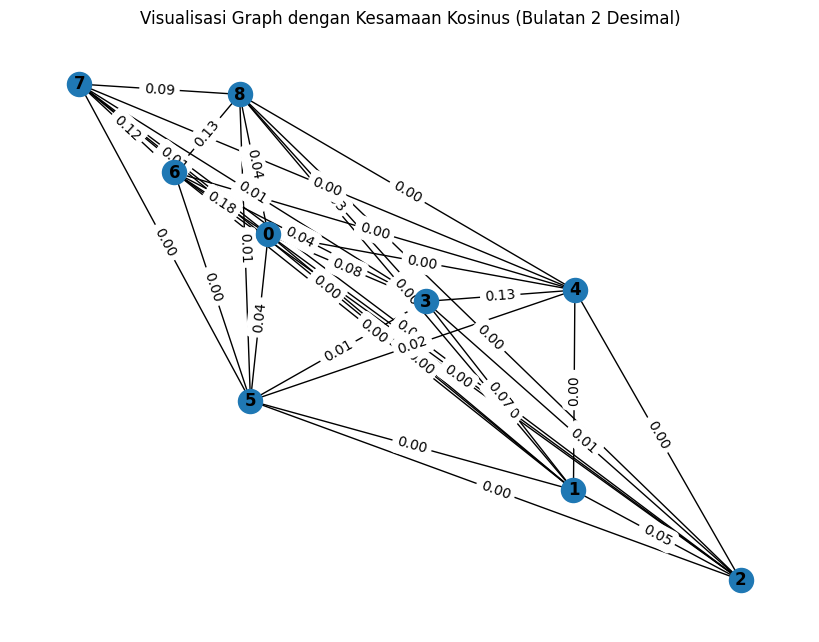
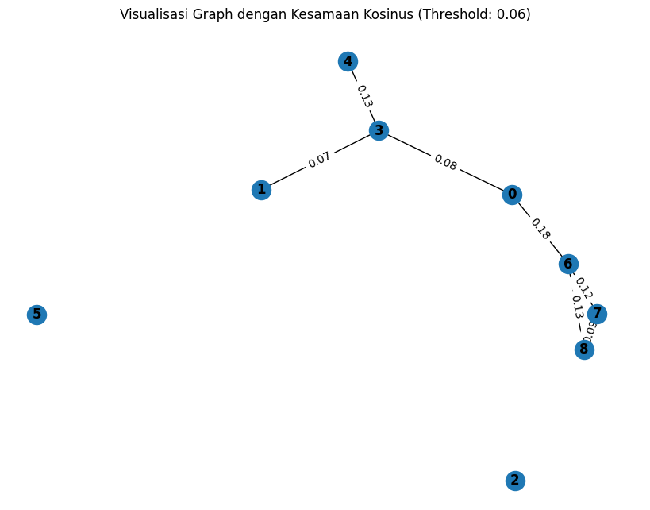

import requests
from bs4 import BeautifulSoup
import csv
def scrape_detik():
url = 'https://www.detik.com/search/searchnews?query=pemilu+2024&sortby=time&page=1'
req = requests.get(url)
sop = BeautifulSoup(req.text, 'html.parser')
li = sop.find('div', class_='list media_rows list-berita')
lin = li.find_all('article')
x = lin[0] # Ambil hanya satu artikel, yaitu yang pertama
link = x.find('a')['href']
date = x.find('a').find('span', class_='date').text.replace('WIB','').replace('detikNews','').split(',')[1]
headline = x.find('a').find('h2').text
ge_ = requests.get(link).text
sop_ = BeautifulSoup(ge_, 'html.parser')
content = sop_.find('div', class_='detail__body-text itp_bodycontent')
paragraphs = content.find_all('p')
content_ = ''.join([p.get_text(strip=True) for p in paragraphs])
return content_
# Panggil fungsi untuk scraping satu artikel
data = scrape_detik()
print(data)
PasanganPrabowo Subianto dan Gibran Rakabumingtiba di KPU RI jelang pengundian nomor urut peserta Pilpres 2024. Prabowo-Gibran tiba menggunakan bus listrik.Pantauandetikcomdi lokasi, Selasa (14/11/2023), Prabowo-Gibran tiba sekitar pukul 18.40 WIB. Prabowo-Gibran tampak mengenakan kemeja biru.Mereka diantar oleh para relawannya. Prabowo-Gibran jadi pasangan pertama yang tiba di KPU jelang pengundian nomor urut.ADVERTISEMENTSCROLL TO CONTINUE WITH CONTENTSelain itu hadir pula Ketum Partai Golkar Airlangga Hartarto, Sekjen Partai Golkar Lodewijk F Paulus, Ketua DPP Partai Golkar Nusron Wahid. Kemudian, ada juga Ketum PAN Zulkifli Hasan, Sekjen PAN Eddy Soeparno.Ada pula, Ketum Partai Demokrat Agus Harimurti Yudhoyono (AHY), Sekjen Partai Demokrat Teuku Riefky. Ketum PSI Kaesang Pangarep, Sekjen PSI Raja Juli Antoni, Anggota Dewan Pembina PSI Grace Natalie, Anggota Dewan Pembina PSI Giring Ganesha.KPU telah resmi menetapkan Anies Baswedan-Muhaimin Iskandar, Ganjar Pranowo-Mahfud Md, dan Prabowo Subianto-Gibran Rakabuming Raka sebagai calon presiden dan calon wakil presiden 2024. Malam ini, KPU akan mengundi nomor urut ketiga pasangan capres-cawapres tersebut.Ketua KPU RI Hasyim Asy'ari menerangkan rangkaian acara pengundian nomor urut dimulai dengan gala dinner atau makan malam bersama. Hasyim mengatakan nantinya KPU akan memberikan undangan bagi masing-masing pasangan capres-cawapres beserta parpol pengusungnya."Jadi mulai dengan gala dinner, makan malam dengan capres-cawapres, dan pimpinan parpol yang mengusulkan mendaftarkan masing-masing pasangan calon," kata Hasyim di kantor KPU, Menteng, Jakarta Pusat, Senin (13/11).
import nltk
from nltk.tokenize import sent_tokenize
nltk.download('punkt')
# Fungsi untuk menghapus tanda baca, tokenisasi, dan stemming per kata dalam setiap kalimat
def tokenisasi_text(teks):
# Tokenisasi kalimat
kalimat = sent_tokenize(teks)
return kalimat
sentence = tokenisasi_text(data)
print(sentence)
[nltk_data] Downloading package punkt to /root/nltk_data...
[nltk_data] Unzipping tokenizers/punkt.zip.
['PasanganPrabowo Subianto dan Gibran Rakabumingtiba di KPU RI jelang pengundian nomor urut peserta Pilpres 2024.', 'Prabowo-Gibran tiba menggunakan bus listrik.Pantauandetikcomdi lokasi, Selasa (14/11/2023), Prabowo-Gibran tiba sekitar pukul 18.40 WIB.', 'Prabowo-Gibran tampak mengenakan kemeja biru.Mereka diantar oleh para relawannya.', 'Prabowo-Gibran jadi pasangan pertama yang tiba di KPU jelang pengundian nomor urut.ADVERTISEMENTSCROLL TO CONTINUE WITH CONTENTSelain itu hadir pula Ketum Partai Golkar Airlangga Hartarto, Sekjen Partai Golkar Lodewijk F Paulus, Ketua DPP Partai Golkar Nusron Wahid.', 'Kemudian, ada juga Ketum PAN Zulkifli Hasan, Sekjen PAN Eddy Soeparno.Ada pula, Ketum Partai Demokrat Agus Harimurti Yudhoyono (AHY), Sekjen Partai Demokrat Teuku Riefky.', 'Ketum PSI Kaesang Pangarep, Sekjen PSI Raja Juli Antoni, Anggota Dewan Pembina PSI Grace Natalie, Anggota Dewan Pembina PSI Giring Ganesha.KPU telah resmi menetapkan Anies Baswedan-Muhaimin Iskandar, Ganjar Pranowo-Mahfud Md, dan Prabowo Subianto-Gibran Rakabuming Raka sebagai calon presiden dan calon wakil presiden 2024.', "Malam ini, KPU akan mengundi nomor urut ketiga pasangan capres-cawapres tersebut.Ketua KPU RI Hasyim Asy'ari menerangkan rangkaian acara pengundian nomor urut dimulai dengan gala dinner atau makan malam bersama.", 'Hasyim mengatakan nantinya KPU akan memberikan undangan bagi masing-masing pasangan capres-cawapres beserta parpol pengusungnya.', '"Jadi mulai dengan gala dinner, makan malam dengan capres-cawapres, dan pimpinan parpol yang mengusulkan mendaftarkan masing-masing pasangan calon," kata Hasyim di kantor KPU, Menteng, Jakarta Pusat, Senin (13/11).']
import math
from collections import Counter
import pandas as pd
# Menghitung jumlah kata dalam setiap kalimat
tf_kalimat = [Counter(words.split()) for words in sentence]
# Menghitung IDF (Inverse Document Frequency)
def calculate_tf_idf(tf_kalimat):
num_documents = len(tf_kalimat)
idf_values = {}
# Mencari setiap kata dalam setiap kalimat untuk menghitung IDF
for tf in tf_kalimat:
for word, count in tf.items():
if word in idf_values:
idf_values[word] += 1
else:
idf_values[word] = 1
tf_idf_kalimat = []
for tf in tf_kalimat:
tf_idf = {}
for word, count in tf.items():
tf_idf[word] = (count / len(tf)) * math.log(num_documents / idf_values[word])
tf_idf_kalimat.append(tf_idf)
return tf_idf_kalimat
# Hasil TF-IDF
hasil_tf_idf = calculate_tf_idf(tf_kalimat)
# Mengonversi list of dicts ke dalam DataFrame
df_tf_idf = pd.DataFrame(hasil_tf_idf)
df_tf_idf.fillna(0, inplace=True) # Mengganti nilai NaN dengan 0
# Tampilkan hasil dalam DataFrame
df_tf_idf
| PasanganPrabowo | Subianto | dan | Gibran | Rakabumingtiba | di | KPU | RI | jelang | pengundian | ... | mendaftarkan | calon," | kata | kantor | KPU, | Menteng, | Jakarta | Pusat, | Senin | (13/11). | |
|---|---|---|---|---|---|---|---|---|---|---|---|---|---|---|---|---|---|---|---|---|---|
| 0 | 0.146482 | 0.146482 | 0.073241 | 0.146482 | 0.146482 | 0.073241 | 0.054062 | 0.100272 | 0.100272 | 0.073241 | ... | 0.000000 | 0.000000 | 0.000000 | 0.000000 | 0.000000 | 0.000000 | 0.000000 | 0.000000 | 0.000000 | 0.000000 |
| 1 | 0.000000 | 0.000000 | 0.000000 | 0.000000 | 0.000000 | 0.000000 | 0.000000 | 0.000000 | 0.000000 | 0.000000 | ... | 0.000000 | 0.000000 | 0.000000 | 0.000000 | 0.000000 | 0.000000 | 0.000000 | 0.000000 | 0.000000 | 0.000000 |
| 2 | 0.000000 | 0.000000 | 0.000000 | 0.000000 | 0.000000 | 0.000000 | 0.000000 | 0.000000 | 0.000000 | 0.000000 | ... | 0.000000 | 0.000000 | 0.000000 | 0.000000 | 0.000000 | 0.000000 | 0.000000 | 0.000000 | 0.000000 | 0.000000 |
| 3 | 0.000000 | 0.000000 | 0.000000 | 0.000000 | 0.000000 | 0.034332 | 0.025342 | 0.000000 | 0.047002 | 0.034332 | ... | 0.000000 | 0.000000 | 0.000000 | 0.000000 | 0.000000 | 0.000000 | 0.000000 | 0.000000 | 0.000000 | 0.000000 |
| 4 | 0.000000 | 0.000000 | 0.000000 | 0.000000 | 0.000000 | 0.000000 | 0.000000 | 0.000000 | 0.000000 | 0.000000 | ... | 0.000000 | 0.000000 | 0.000000 | 0.000000 | 0.000000 | 0.000000 | 0.000000 | 0.000000 | 0.000000 | 0.000000 |
| 5 | 0.000000 | 0.000000 | 0.064624 | 0.000000 | 0.000000 | 0.000000 | 0.000000 | 0.000000 | 0.000000 | 0.000000 | ... | 0.000000 | 0.000000 | 0.000000 | 0.000000 | 0.000000 | 0.000000 | 0.000000 | 0.000000 | 0.000000 | 0.000000 |
| 6 | 0.000000 | 0.000000 | 0.000000 | 0.000000 | 0.000000 | 0.000000 | 0.062379 | 0.057849 | 0.000000 | 0.042254 | ... | 0.000000 | 0.000000 | 0.000000 | 0.000000 | 0.000000 | 0.000000 | 0.000000 | 0.000000 | 0.000000 | 0.000000 |
| 7 | 0.000000 | 0.000000 | 0.000000 | 0.000000 | 0.000000 | 0.000000 | 0.057924 | 0.000000 | 0.000000 | 0.000000 | ... | 0.000000 | 0.000000 | 0.000000 | 0.000000 | 0.000000 | 0.000000 | 0.000000 | 0.000000 | 0.000000 | 0.000000 |
| 8 | 0.000000 | 0.000000 | 0.040689 | 0.000000 | 0.000000 | 0.040689 | 0.000000 | 0.000000 | 0.000000 | 0.000000 | ... | 0.081379 | 0.081379 | 0.081379 | 0.081379 | 0.081379 | 0.081379 | 0.081379 | 0.081379 | 0.081379 | 0.081379 |
9 rows × 151 columns
import math
from collections import Counter
from sklearn.metrics.pairwise import cosine_similarity
import pandas as pd
# Diasumsikan hasil_tf_idf adalah list yang berisi nilai TF-IDF
# Mengonversi list dari kamus ke DataFrame pandas
df_tf_idf = pd.DataFrame(hasil_tf_idf)
df_tf_idf = df_tf_idf.fillna(0) # Mengganti nilai NaN dengan 0
# Mengonversi DataFrame ke array NumPy untuk perhitungan kesamaan kosinus
tfidf_matrix = df_tf_idf.to_numpy()
# Menghitung kesamaan kosinus
similarity_matrix = cosine_similarity(tfidf_matrix)
df_tf_idf = pd.DataFrame(similarity_matrix)
kalimat = ["Kalimat " + str(i) for i in range(1, len(similarity_matrix) + 1)]
df_tf_idf = df_tf_idf.set_axis(kalimat, axis=0)
df_tf_idf = df_tf_idf.set_axis(kalimat, axis=1)
df_tf_idf
| Kalimat 1 | Kalimat 2 | Kalimat 3 | Kalimat 4 | Kalimat 5 | Kalimat 6 | Kalimat 7 | Kalimat 8 | Kalimat 9 | |
|---|---|---|---|---|---|---|---|---|---|
| Kalimat 1 | 1.000000 | 0.000000 | 0.000000 | 0.075862 | 0.000000 | 0.040990 | 0.179382 | 0.014803 | 0.035863 |
| Kalimat 2 | 0.000000 | 1.000000 | 0.048515 | 0.067325 | 0.000000 | 0.000000 | 0.000000 | 0.000000 | 0.000000 |
| Kalimat 3 | 0.000000 | 0.048515 | 1.000000 | 0.014630 | 0.000000 | 0.000000 | 0.000000 | 0.000000 | 0.000000 |
| Kalimat 4 | 0.075862 | 0.067325 | 0.014630 | 1.000000 | 0.125948 | 0.010676 | 0.043186 | 0.014938 | 0.030935 |
| Kalimat 5 | 0.000000 | 0.000000 | 0.000000 | 0.125948 | 1.000000 | 0.024974 | 0.000000 | 0.000000 | 0.000000 |
| Kalimat 6 | 0.040990 | 0.000000 | 0.000000 | 0.010676 | 0.024974 | 1.000000 | 0.000000 | 0.000000 | 0.013675 |
| Kalimat 7 | 0.179382 | 0.000000 | 0.000000 | 0.043186 | 0.000000 | 0.000000 | 1.000000 | 0.115442 | 0.130303 |
| Kalimat 8 | 0.014803 | 0.000000 | 0.000000 | 0.014938 | 0.000000 | 0.000000 | 0.115442 | 1.000000 | 0.092951 |
| Kalimat 9 | 0.035863 | 0.000000 | 0.000000 | 0.030935 | 0.000000 | 0.013675 | 0.130303 | 0.092951 | 1.000000 |
import math
from collections import Counter
import networkx as nx
from sklearn.metrics.pairwise import cosine_similarity
import pandas as pd
import matplotlib.pyplot as plt
# Diasumsikan similarity_matrix sudah didefinisikan sebelumnya
# Contoh similarity_matrix
G = nx.Graph()
for i in range(len(similarity_matrix)):
for j in range(len(similarity_matrix[0])):
if i != j:
similarity = round(similarity_matrix[i][j], 2) # Bulatkan nilai ke 2 angka dibelakang koma
G.add_edge(i, j, weight=similarity)
# Visualisasi grafik
plt.figure(figsize=(8, 6))
pos = nx.spring_layout(G) # Menentukan layout grafik
nx.draw(G, pos, with_labels=True, font_weight='bold') # Menggambar grafik dengan label node
edge_labels = nx.get_edge_attributes(G, 'weight') # Mendapatkan atribut edge (bobot)
# Mengubah nilai bobot menjadi string dengan 2 angka di belakang koma
edge_labels = {(i, j): f"{weight:.2f}" for (i, j), weight in edge_labels.items()}
nx.draw_networkx_edge_labels(G, pos, edge_labels=edge_labels) # Menampilkan label bobot pada edge
plt.title("Visualisasi Graph dengan Kesamaan Kosinus (Bulatan 2 Desimal)")
plt.show()

import math
from collections import Counter
import networkx as nx
from sklearn.metrics.pairwise import cosine_similarity
import pandas as pd
import matplotlib.pyplot as plt
# Diasumsikan similarity_matrix sudah didefinisikan sebelumnya
# Contoh similarity_matrix
G = nx.Graph()
threshold = 0.06 # Threshold untuk menyambungkan node
# Tambahkan semua node ke grafik
G.add_nodes_from(range(len(similarity_matrix)))
# Tambahkan edge antara node yang nilainya melebihi threshold
for i in range(len(similarity_matrix)):
for j in range(len(similarity_matrix[0])):
if i != j and similarity_matrix[i][j] > threshold:
similarity = round(similarity_matrix[i][j], 2) # Bulatkan nilai ke 2 angka dibelakang koma
G.add_edge(i, j, weight=similarity)
# Visualisasi grafik
plt.figure(figsize=(8, 6))
pos = nx.spring_layout(G) # Menentukan layout grafik
nx.draw(G, pos, with_labels=True, font_weight='bold') # Menggambar grafik dengan label node
edge_labels = nx.get_edge_attributes(G, 'weight') # Mendapatkan atribut edge (bobot)
# Mengubah nilai bobot menjadi string dengan 2 angka di belakang koma
edge_labels = {(i, j): f"{weight:.2f}" for (i, j), weight in edge_labels.items()}
nx.draw_networkx_edge_labels(G, pos, edge_labels=edge_labels) # Menampilkan label bobot pada edge
# Tambahkan label pada node yang tidak terhubung
isolated_nodes = list(nx.isolates(G))
if isolated_nodes:
# isolated_nodes_labels = {node: f'Node {node} (Not connected)' for node in isolated_nodes}
pos_extra = {node: (pos[node][0], pos[node][1] + 0.1) for node in isolated_nodes}
plt.title(f"Visualisasi Graph dengan Kesamaan Kosinus (Threshold: {threshold})")
plt.show()

# Menghitung closeness centrality dari graph
closeness = nx.closeness_centrality(G)
# Menampilkan closeness centrality
print("Closeness Centrality:")
for node, closeness_value in closeness.items():
print(f"Node {node}: {closeness_value}")
# Menampilkan 3 kalimat dengan PageRank tertinggi
sorted_pagerank = sorted(closeness.items(), key=lambda x: x[1], reverse=True)
print("=============================")
print("Top 3 sentences based on closeness centrality:")
for node, rank in sorted_pagerank[:3]:
print(sentence[node])
print("=============================")
print("Top 3 node based on closeness centrality:")
for node, rank in sorted_pagerank[:3]:
print(f"Node {node} dengan PageRank {rank:.4f}")
Closeness Centrality:
Node 0: 0.44999999999999996
Node 1: 0.28125
Node 2: 0.0
Node 3: 0.40909090909090906
Node 4: 0.28125
Node 5: 0.0
Node 6: 0.40909090909090906
Node 7: 0.30000000000000004
Node 8: 0.30000000000000004
=============================
Top 3 sentences based on closeness centrality:
PasanganPrabowo Subianto dan Gibran Rakabumingtiba di KPU RI jelang pengundian nomor urut peserta Pilpres 2024.
Prabowo-Gibran jadi pasangan pertama yang tiba di KPU jelang pengundian nomor urut.ADVERTISEMENTSCROLL TO CONTINUE WITH CONTENTSelain itu hadir pula Ketum Partai Golkar Airlangga Hartarto, Sekjen Partai Golkar Lodewijk F Paulus, Ketua DPP Partai Golkar Nusron Wahid.
Malam ini, KPU akan mengundi nomor urut ketiga pasangan capres-cawapres tersebut.Ketua KPU RI Hasyim Asy'ari menerangkan rangkaian acara pengundian nomor urut dimulai dengan gala dinner atau makan malam bersama.
=============================
Top 3 node based on closeness centrality:
Node 0 dengan PageRank 0.4500
Node 3 dengan PageRank 0.4091
Node 6 dengan PageRank 0.4091
# Hitung PageRank
pagerank = nx.pagerank(G)
# Menampilkan Closeness Centrality
print("PageRank:")
for node, rank in pagerank.items():
print(f"Node {node}: {rank}")
# Menampilkan 3 kalimat dengan PageRank tertinggi
sorted_pagerank = sorted(pagerank.items(), key=lambda x: x[1], reverse=True)
print("=============================")
print("Top 3 sentences based on PageRank:")
for node, rank in sorted_pagerank[:3]:
print(sentence[node])
print("=============================")
print("Top 3 node based on PageRank:")
for node, rank in sorted_pagerank[:3]:
print(f"Node {node} dengan PageRank {rank:.4f}")
#sorted_pagerank = sorted(pagerank.items(), key=lambda x: x[1], reverse=True)
PageRank:
Node 0: 0.1471854551737958
Node 1: 0.061813086116883534
Node 2: 0.020547945205479454
Node 3: 0.19419161052700412
Node 4: 0.09718320689808702
Node 5: 0.020547945205479454
Node 6: 0.22336924293615645
Node 7: 0.11523476680544259
Node 8: 0.11992674113167132
=============================
Top 3 sentences based on PageRank:
Malam ini, KPU akan mengundi nomor urut ketiga pasangan capres-cawapres tersebut.Ketua KPU RI Hasyim Asy'ari menerangkan rangkaian acara pengundian nomor urut dimulai dengan gala dinner atau makan malam bersama.
Prabowo-Gibran jadi pasangan pertama yang tiba di KPU jelang pengundian nomor urut.ADVERTISEMENTSCROLL TO CONTINUE WITH CONTENTSelain itu hadir pula Ketum Partai Golkar Airlangga Hartarto, Sekjen Partai Golkar Lodewijk F Paulus, Ketua DPP Partai Golkar Nusron Wahid.
PasanganPrabowo Subianto dan Gibran Rakabumingtiba di KPU RI jelang pengundian nomor urut peserta Pilpres 2024.
=============================
Top 3 node based on PageRank:
Node 6 dengan PageRank 0.2234
Node 3 dengan PageRank 0.1942
Node 0 dengan PageRank 0.1472
# Hitung Eigenvector Centrality
eigenvector = nx.eigenvector_centrality(G)
# Hitung Eigenvalue Centrality
eigenvalue = nx.eigenvector_centrality_numpy(G)
# Menampilkan Eigenvector Centrality
print("Eigenvector Centrality:")
for node, eigenvector_value in eigenvector.items():
print(f"Node {node}: {eigenvector_value:.4f}")
# Menampilkan 3 kalimat dengan PageRank tertinggi
sorted_pagerank = sorted(eigenvector.items(), key=lambda x: x[1], reverse=True)
print("=============================")
print("Top 3 sentences based on PageRank:")
for node, rank in sorted_pagerank[:3]:
print(sentence[node])
print("=============================")
print("Top 3 node based on PageRank:")
for node, rank in sorted_pagerank[:3]:
print(f"Node {node} dengan PageRank {rank:.4f}")
print("=============================")
# Menampilkan Eigenvalue Centrality
print("Eigenvalue Centrality:")
for node, eigenvalue_value in eigenvalue.items():
print(f"Node {node}: {eigenvalue_value:.4f}")
# Menampilkan 3 kalimat dengan PageRank tertinggi
sorted_pagerank = sorted(eigenvalue.items(), key=lambda x: x[1], reverse=True)
print("=============================")
print("Top 3 sentences based on PageRank:")
for node, rank in sorted_pagerank[:3]:
print(sentence[node])
print("=============================")
print("Top 3 node based on PageRank:")
for node, rank in sorted_pagerank[:3]:
print(f"Node {node} dengan PageRank {rank:.4f}")
Eigenvector Centrality:
Node 0: 0.3778
Node 1: 0.1228
Node 2: 0.0000
Node 3: 0.2766
Node 4: 0.1228
Node 5: 0.0000
Node 6: 0.5746
Node 7: 0.4585
Node 8: 0.4585
=============================
Top 3 sentences based on PageRank:
Malam ini, KPU akan mengundi nomor urut ketiga pasangan capres-cawapres tersebut.Ketua KPU RI Hasyim Asy'ari menerangkan rangkaian acara pengundian nomor urut dimulai dengan gala dinner atau makan malam bersama.
Hasyim mengatakan nantinya KPU akan memberikan undangan bagi masing-masing pasangan capres-cawapres beserta parpol pengusungnya.
"Jadi mulai dengan gala dinner, makan malam dengan capres-cawapres, dan pimpinan parpol yang mengusulkan mendaftarkan masing-masing pasangan calon," kata Hasyim di kantor KPU, Menteng, Jakarta Pusat, Senin (13/11).
=============================
Top 3 node based on PageRank:
Node 6 dengan PageRank 0.5746
Node 7 dengan PageRank 0.4585
Node 8 dengan PageRank 0.4585
=============================
Eigenvalue Centrality:
Node 0: 0.3778
Node 1: 0.1228
Node 2: -0.0000
Node 3: 0.2766
Node 4: 0.1228
Node 5: -0.0000
Node 6: 0.5746
Node 7: 0.4585
Node 8: 0.4585
=============================
Top 3 sentences based on PageRank:
Malam ini, KPU akan mengundi nomor urut ketiga pasangan capres-cawapres tersebut.Ketua KPU RI Hasyim Asy'ari menerangkan rangkaian acara pengundian nomor urut dimulai dengan gala dinner atau makan malam bersama.
Hasyim mengatakan nantinya KPU akan memberikan undangan bagi masing-masing pasangan capres-cawapres beserta parpol pengusungnya.
"Jadi mulai dengan gala dinner, makan malam dengan capres-cawapres, dan pimpinan parpol yang mengusulkan mendaftarkan masing-masing pasangan calon," kata Hasyim di kantor KPU, Menteng, Jakarta Pusat, Senin (13/11).
=============================
Top 3 node based on PageRank:
Node 6 dengan PageRank 0.5746
Node 7 dengan PageRank 0.4585
Node 8 dengan PageRank 0.4585